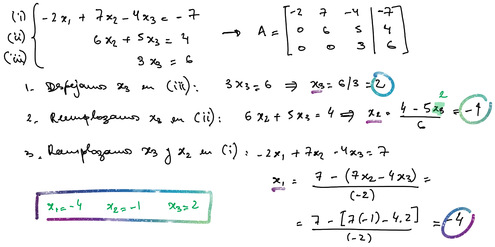
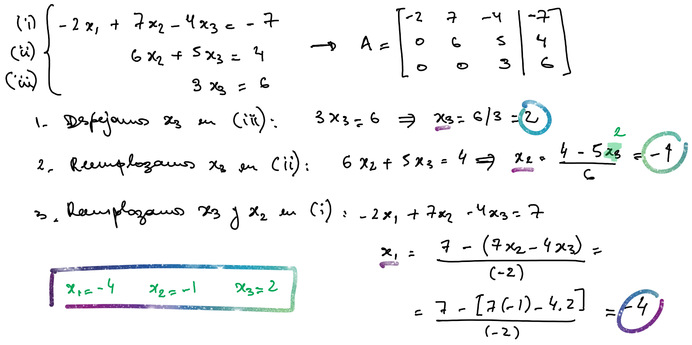
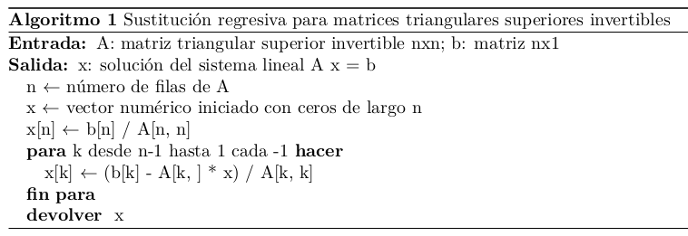
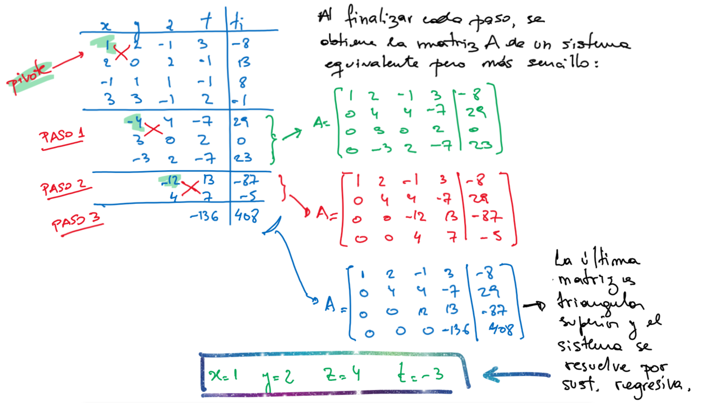
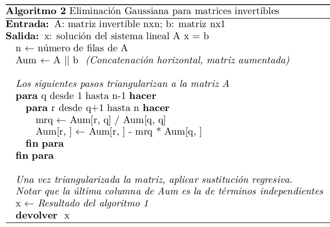
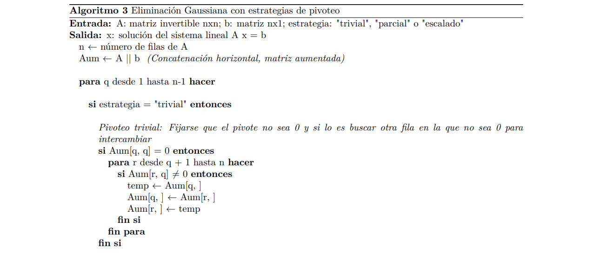
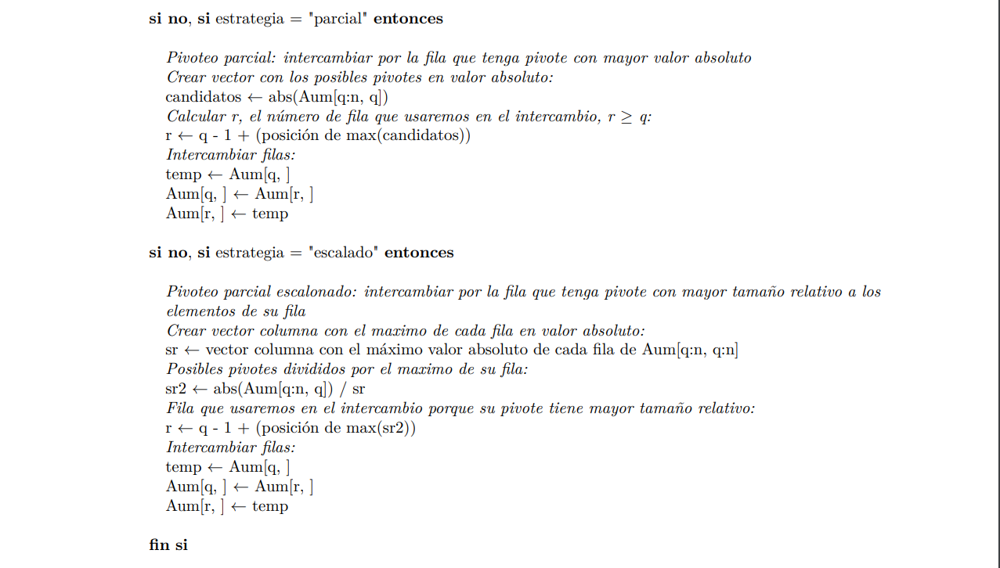
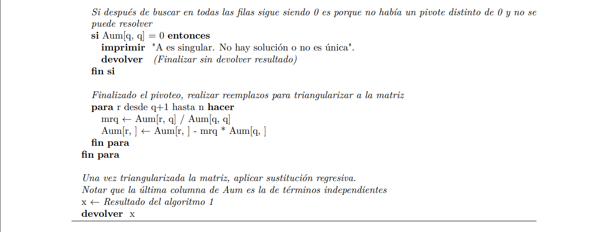
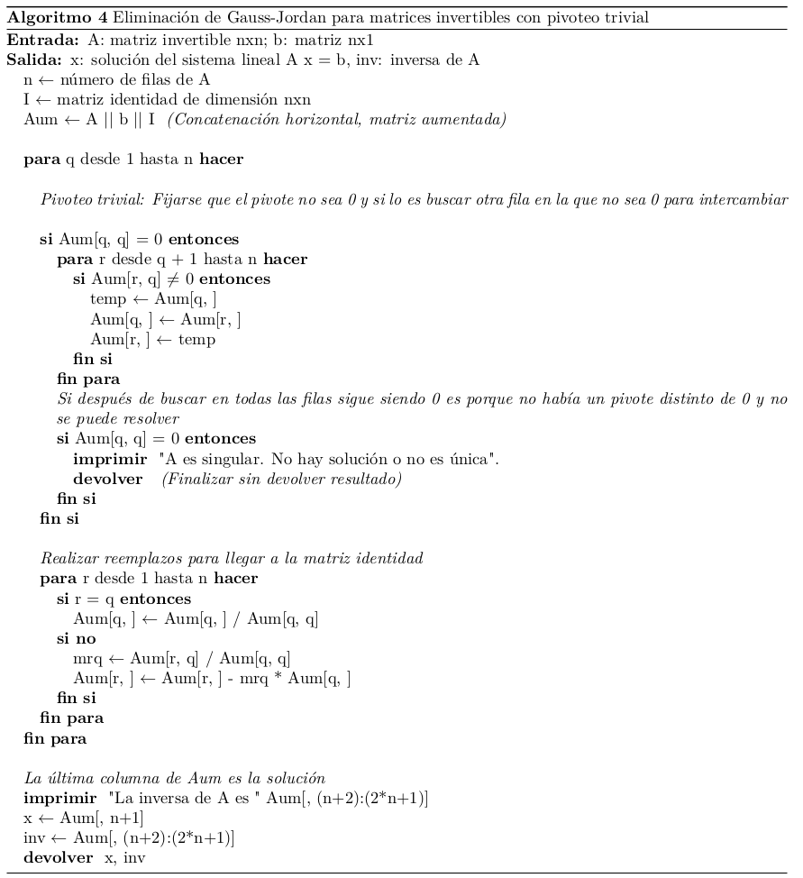

knitr::include_graphics("Plots/U3/pizarra1.png")
\[ \begin{cases} a_{11}x_1 + a_{12}x_2 + \cdots + a_{1n}x_n = b_1 \\ a_{21}x_1 + a_{22}x_2 + \cdots + a_{2n}x_n = b_2 \\ \vdots \\ a_{n1}x_1 + a_{n2}x_2 + \cdots + a_{nn}x_n = b_n \end{cases} \]
\[ \begin{bmatrix} a_{11} & a_{12} & \cdots & a_{1n} \\ a_{21} & a_{22} & \cdots & a_{2n} \\ \vdots & \vdots & \ddots & \vdots \\ a_{n1} & a_{n2} & \cdots & a_{nn} \end{bmatrix} \times \begin{bmatrix} x_1 \\ x_2 \\ \vdots \\ x_n \end{bmatrix} = \begin{bmatrix} b_1 \\ b_2 \\ \vdots \\ b_n \end{bmatrix} \]
\[ \begin{bmatrix} \mathbf{A}, & \mathbf{b} \end{bmatrix} = \begin{bmatrix} \begin{array}{cccc|c} a_{11} & a_{12} & \cdots & a_{1n} & b_1\\ a_{21} & a_{22} & \cdots & a_{2n} & b_2\\ \vdots & \vdots & \ddots & \vdots & \vdots\\ a_{n1} & a_{n2} & \cdots & a_{nn} & b_n \end{array} \end{bmatrix} \]
Un sistema de ecuaciones lineales se clasifica en:
Además, las siguientes condiciones son equivalentes:
Dos sistemas de orden \(n \times n\) son equivalentes si tienen el mismo conjunto de soluciones.
Existen ciertas transformaciones sobre las ecuaciones de un sistema que no cambian el conjunto de soluciones (producen un sistema equivalente). Si llamamos con \(E_i\) a cada una de las ecuaciones del sistema:
Mediante una secuencia de estas operaciones, un sistema lineal se transforma en uno nuevo más fácil de resolver y con las mismas soluciones.
Realizar estas transformaciones sobre las ecuaciones es equivalente a realizar las mismas operaciones sobre las filas de la matriz aumentada.
En esta sección presentamos la notación que utilizaremos para expresar algoritmos con operaciones matriciales (facilitando su programación).
Dada una matriz \(\mathbf{Z}\) de dimensión \(n \times m\), anotamos:
Dado un vector \(\mathbf{Z}\) de largo \(n\), anotamos:
Métodos exactos: permiten obtener la solución del sistema de manera directa.
Métodos aproximados: utilizan algoritmos iterativos que calculan las solución del sistema por aproximaciones sucesivas.
En muchas ocasiones los métodos aproximados permiten obtener un grado de exactitud superior al que se puede obtener empleando los denominados métodos exactos, debido fundamentalmente a los errores de redondeo que se producen en el proceso.
Si la matriz de coeficientes es de esta forma:
\[ \begin{bmatrix} a_{11} & 0 & \cdots & 0 \\ 0 & a_{22} & \cdots & 0 \\ \vdots & \vdots & \ddots & \vdots \\ 0 & 0 & \cdots & a_{nn} \end{bmatrix} \times \begin{bmatrix} x_1 \\ x_2 \\ \vdots \\ x_n \end{bmatrix} = \begin{bmatrix} b_1 \\ b_2 \\ \vdots \\ b_n \end{bmatrix} \]
el sistema se reduce a \(n\) ecuaciones simples y la solución sencillamente es:
\[ \mathbf{x} = \begin{bmatrix} b_1/a_{11} \\ b_2/a_{22} \\ \vdots \\ b_n/a_{nn} \end{bmatrix} \]
knitr::include_graphics("Plots/U3/pizarra1.png")
Hemos encontrado el valor de la última incógnita y fuimos haciendo reemplazos en las ecuaciones desde abajo hacia arriba para encontrar las restantes.
Esto se conoce como sustitución regresiva o hacia atrás.
Para poder formalizar este procedimiento que nos resulta natural y así estar en condiciones para implementarlo computacionalmente, tenemos que encontrar una fórmula que exprese sin ambigüedad cómo hacer todos esos cálculos.
De manera genera, vamos a considerar que la matriz \(\mathbf{A}\) es triangular superior:
\[ \begin{bmatrix} a_{11} & a_{12} & a_{13} & \cdots & a_{1n} \\ 0 & a_{22} & a_{23} & \cdots & a_{2n} \\ 0 & 0 & a_{33} & \cdots & a_{3n} \\ \vdots & \vdots & \vdots & \ddots & \vdots \\ 0 & 0 & 0 & \cdots & a_{nn} \end{bmatrix} \times \begin{bmatrix} x_1 \\ x_2 \\ \vdots \\ x_n \end{bmatrix} = \begin{bmatrix} b_1 \\ b_2 \\ \vdots \\ b_n \end{bmatrix} \]
La solución de \(x_n\) es inmediata y a partir de ella se encuentran las restantes en orden inverso \(x_{n-1}, \cdots, x_1\), aplicando el algoritmo de sustitución regresiva:
\[ x_n = \frac{b_n}{a_{nn}} \text{ y } x_k = \frac{b_k - \sum_{j = k+1}^{n}a_{kj}x_j}{a_{kk}} \quad k = n-1, n-2, \cdots, 1 \]
\[ \mathbf{x}[n] = \frac{\mathbf{b}[n]}{\mathbf{A}[n,n]} \qquad \mathbf{x}[k] = \frac{\mathbf{b}[k] - \mathbf{A}[k, (k+1):n] \times \mathbf{x}[(k+1):n]}{\mathbf{A}[k,k]} \qquad k = n-1, n-2, \cdots, 1 \]
\[ \mathbf{x}[n] = \frac{\mathbf{b}[n]}{\mathbf{A}[n,n]} \qquad \mathbf{x}[k] = \frac{\mathbf{b}[k] - \mathbf{A}[k, ] \times \mathbf{x}}{\mathbf{A}[k,k]} \qquad k = n-1, n-2, \cdots, 1 \]
knitr::include_graphics("Plots/U3/alg1.png")
Ejercicio:
Operar “a mano” de forma matricial siguiendo los pasos del algoritmo para corroborar su funcionamiento con el sistema de ecuaciones del ejemplo.
\[ \begin{cases} x+2y-z+3t=-8 \\ 2x+2z-t=13 \\ -x+y+z-t=8\\ 3x+3y-z+2t = -1 \end{cases} \quad \mathbf{A}= \begin{bmatrix} 1 & 2 & -1 & 3 \\ 2 & 0 & 2 & -1 \\ -1 & 1 & 1 & -1 \\ 3 & 3 & -1 & 2 \end{bmatrix} \quad \mathbf{x} = \begin{bmatrix} x \\ y \\ z \\ t \end{bmatrix} \quad \mathbf{b} = \begin{bmatrix} -8 \\ 13 \\ 8 \\ -1 \end{bmatrix} \]
\[ \begin{bmatrix} \mathbf{A} & \mathbf{b} \end{bmatrix} = \begin{bmatrix} 1 & 2 & -1 & 3 &|& -8\\ 2 & 0 & 2 & -1 &|& 13\\ -1 & 1 & 1 & -1 &|& 8\\ 3 & 3 & -1 & 2 &|& -1 \end{bmatrix} \] “A mano”

Como podemos ver, aunque no lo pensemos, al hacer “este por este menos este por este” estamos pasando sucesivamente de un sistema a otro equivalente, con una matriz de coeficientes más sencilla (van apareciendo ceros, es decir, se van elminando incógnitas) hasta llegar a tener una matriz triangular superior, como en el caso anterior.
Si bien este procedimiento puede ser largo, estamos acostumbrados y no nos presenta ninguna dificultad.
El desafío surge si tenemos que pensar en una forma de expresarlo formalmente y de hallar fórmulas que puedan ser programadas, de modo que la computadora pueda resolver el sistema por nosotros.
A continuación vamos a repetir el proceso paso por paso para poder deducir un algoritmo.
Primer paso
En el primer paso eliminamos la incógnita \(x\) en las ecuaciones 2, 3 y 4, buscando que queden ceros en toda la primera columna excepto en el elemento diagonal.
Observando con detenimiento, esto se logra realizando reemplazos en las ecuaciones de esta forma:
\[E_r - m_{r1} \times E_1 \rightarrow E_r \qquad r=2, 3, 4\]
Los valores \(m_{r1}\) se llaman multiplicadores y se definen como:
\[m_{r1} = \frac{a_{r1}}{a_{11}}, \quad r = 2, 3, 4\]
Esta elección de multiplicadores hace que se generen ceros en la primera columna desde la fila 2 hasta la última.
En este ejemplo, nos quedan:
\[ m_{21} = \frac{a_{21}}{a_{11}} = 2 \qquad m_{31} = \frac{a_{31}}{a_{11}} = -1 \qquad m_{41} = \frac{a_{41}}{a_{11}} = 3 \]
Los reemplazos a realizar entonces son:
\[ \begin{array}{rc} E_2 - 2 \times E_1 & \rightarrow E_2 \\ E_3 - (-1) \times E_1 & \rightarrow E_3 \\ E_4 - 3 \times E_1 & \rightarrow E_4 \end{array} \]
El elemento \(a_{11}=1\) que está en el denominador de todos los multiplicadores se le dice pivote y a la fila 1 que se usa en los reemplazos se le dice fila pivote.
El resultado de los reemplazos anteriores es:
\[ \begin{matrix} \text{pivote} \rightarrow \\ m_{21} = 2 \\ m_{31} = -1 \\ m_{41} = 3 \end{matrix} \begin{bmatrix} 1 & 2 & -1 & 3 &|& -8\\ 2 & 0 & 2 & -1 &|& 13\\ -1 & 1 & 1 & -1 &|& 8\\ 3 & 3 & -1 & 2 &|& -1 \end{bmatrix} \implies \begin{bmatrix} 1 & 2 & -1 & 3 &|& -8\\ 0 & -4 & 4 & -7 &|& 29\\ 0 & 3 & 0 & 2 &|& 0\\ 0 & -3 & 2 & -7 &|& 23 \end{bmatrix} \]
Segundo paso
En el segundo paso, eliminamos la incógnita \(y\) en las ecuaciones 3 y 4.
La fila pivote pasa a ser la segunda y el pivote es \(a_{22}=-4\).
Los multiplicadores son \(m_{r2}=a_{r2}/a_{22}\), \(r=3,4\):
\[ m_{32} = \frac{a_{32}}{a_{22}} = -3/4 \qquad m_{42} = \frac{a_{42}}{a_{22}} = 3/4 \]
dando lugar a los reemplazos:
\[ \begin{array}{rc} E_3 - (-3/4) \times E_2 & \rightarrow E_3 \\ E_4 - 3/4 \times E_2 & \rightarrow E_4 \end{array} \]
El resultado es:
\[ \begin{matrix} \\ \text{pivote} \rightarrow \\ m_{32} = -3/4 \\ m_{42} = 3/4 \end{matrix} \begin{bmatrix} 1 & 2 & -1 & 3 &|& -8\\ 0 & -4 & 4 & -7 &|& 29\\ 0 & 3 & 0 & 2 &|& 0\\ 0 & -3 & 2 & -7 &|& 23 \end{bmatrix} \implies \begin{bmatrix} 1 & 2 & -1 & 3 &|& -8\\ 0 & -4 & 4 & -7 &|& 29\\ 0 & 0 & 3 & -13/4 &|& 87/4\\ 0 & 0 & -1 & -7/4 &|& 5/4 \end{bmatrix} \]
Tercer paso
Finalmente, eliminamos la incógnita \(z\) en la última ecuación.
La fila pivote es la 3º y el pivote es \(a_{33}=3\).
El multiplicador es \(m_{43}=a_{43}/a_{33}=-1/3\).
El reemplazo a realizar es:
\[E_4 - (-1/3) \times E_3 \rightarrow E_4\]
El resultado es:
\[ \begin{matrix} \\ \\ \text{pivote} \rightarrow \\ m_{43} = -1/3 \end{matrix} \begin{bmatrix} 1 & 2 & -1 & 3 &|& -8\\ 0 & -4 & 4 & -7 &|& 29\\ 0 & 0 & 3 & -13/4 &|& 87/4\\ 0 & 0 & -1 & -7/4 &|& 5/4 \end{bmatrix} \implies \begin{bmatrix} 1 & 2 & -1 & 3 &|& -8\\ 0 & -4 & 4 & -7 &|& 29\\ 0 & 0 & 3 & -13/4 &|& 87/4\\ 0 & 0 & 0 & -17/6 &|& 17/2 \end{bmatrix} \]
Hemos llegado a un sistema equivalente cuya matriz de coeficientes es triangular superior, en el que aplicamos el algoritmo de sustitución regresiva:
\[ \left\{ \begin{aligned} x+2y-z-3t &=-8 \cr -4y+4z-7t &=29\cr 3z-13/4t &=87/4\cr -17/6t &=17/2 \end{aligned} \right. \implies \left\{ \begin{aligned} x &= 1\\ y &= 2\\ z &= 4\\ t &= -3 \end{aligned} \right. \]
Esta matriz triangular es algo diferente a la que obtuvimos cuando hicimos las cuentas con el “cuadrito” de Gauss a mano, pero es equivalente (si prestamos atención, las filas que son distintas en realidad son los mismos valores multiplicados todos por una constante).
La ventaja de haber hecho los cálculos en términos de multiplicadores y reemplazos de filas, es que ahora tenemos un sistema para crear un algoritmo y poder programarlo.
Para cada fila \(q\) desde \(1\) hasta \(n-1\) y luego para cada fila \(r\) desde \(q+1\) hasta \(n\), hay que hacer los reemplazos:
\[ m_{rq} = \frac{a_{rq}}{a_{qq}} \qquad E_r - m_{rq} \times E_q \rightarrow E_r \qquad q=1,...,n-1 \qquad r = q+1, ..., n \]
El algoritmo resulta ser:
knitr::include_graphics("Plots/U3/alg2.png")
En el algoritmo anterior es necesario que los pivotes \(a_{qq} \neq 0 ~\forall q\).
Si en uno de los pasos encontramos un \(a_{qq} = 0\), debemos intercambiar la \(q\)-ésima fila por una cualquiera de las siguientes, por ejemplo la fila \(k\), en la que \(a_{kq} \neq 0, k>q\).
Esta estrategia para hallar un pivote no nulo se llama pivoteo trivial.
Ejemplo: verificar “a mano” que con el siguiente sistema, si seguimos el algoritmo anterior, incurrimos en este problema. En cambio, si seguimos el algoritmo con pivoteo trivial llegamos a la solución.
\[ \begin{cases} x-2y+z=-4 \\ -2x+4y-3z=3 \\ x-3y-4z=-1 \end{cases} \]
Pivoteo parcial
Pivoteo parcial escalado
Reduce aún más los efectos de la propagación de los errores.
Se elige el elemento de la columna \(q\)-ésima, en o por debajo de la diagonal principal, que tiene mayor tamaño relativo con respecto al resto de los elementos de su fila.
Antes de definir el multiplicador y hacer las operaciones correspondientes, en cada paso se debe:
\[ s_r = max\{|a_{rq}|, |a_{r,q+1}|, \cdots, |a_{rn}| \} \quad r = q, q+1, \cdots, n \]
Ver los ejemplos bajo el título “Ilustración” de las páginas 283 y 284.



Ya vimos que el método de Gauss transforma la matriz de coeficientes \(\mathbf{A}\) en una matriz triangular superior, haciendo estos reemplazos:
\[ m_{rq} = \frac{a_{rq}}{a_{qq}} \qquad E_r - m_{rq} \times E_q \rightarrow E_r \qquad q=1,...,n-1 \qquad r = q+1, ..., n \]
El método de Gauss-Jordan transforma \(\mathbf{A}\) hasta obtener la matriz identidad.
Los multiplicadores se definen de la misma forma, pero en cada paso \(q\) se sustituyen todas las filas, no sólo las filas posteriores a la fila \(q\).
Para cada fila \(q\) desde \(1\) hasta \(n-1\) y luego para cada fila \(r\) desde \(1\) hasta \(n\), hay que hacer los reemplazos:
\[ \text{Si } r \neq q:\, m_{rq} = \frac{a_{rq}}{a_{qq}} \qquad E_r - m_{rq} \times E_q \rightarrow E_r \]
\[ \text{Si } r = q:\,E_r /a_{rr} \rightarrow E_r \]
Trabajando de esta forma, además de resolver el sistema se puede hallar fácilmente la inversa de \(\mathbf{A}\).
Para esto hay que concatenar a la derecha de la matriz aumentada una matriz identidad de orden \(n\).
Cuando en la submatriz izquierda se llega a la matriz identidad, en el centro habrá quedado el vector solución y a su derecha la matriz inversa.
Retomemos el último ejemplo para resolver el sistema mediante Gauss-Jordan y, de paso, obtener \(\mathbf{A}^{-1}\).
\[ \begin{bmatrix} 1 & 2 & -1 & 3 &|& -8\\ 2 & 0 & 2 & -1 &|& 13\\ -1 & 1 & 1 & -1 &|& 8\\ 3 & 3 & -1 & 2 &|& -1 \end{bmatrix} \]
\[ \begin{bmatrix} 1 & 2 & -1 & 3 &|& -8 &|& 1 & 0 & 0 & 0\\ 2 & 0 & 2 & -1 &|& 13 &|& 0 & 1 & 0 & 0 \\ -1 & 1 & 1 & -1 &|& 8 &|& 0 & 0 & 1 & 0\\ 3 & 3 & -1 & 2 &|& -1 &|& 0 & 0 & 0 & 1 \end{bmatrix} \]
Paso 1
\[ \begin{matrix} E_2 - 2 E_1 \rightarrow E_2\\ E_3 + E_1 \rightarrow E_3 \\ E_4 - 3 E_1 \rightarrow E_4 \\ E_1 / 1 \rightarrow E_1 \end{matrix} \implies \begin{bmatrix} 1 & 2 & -1 & 3 &|& -8 &|& 1 & 0 & 0 & 0\\ 0 & -4 & 4 & -7 &|& 29 &|& -2 & 1 & 0 & 0\\ 0 & 3 & 0 & 2 &|& 0 &|& 1 & 0 & 1 & 0\\ 0 & -3 & 2 & -7 &|& 23 &|& -3 & 0 & 0 & 1 \end{bmatrix} \]
Paso 2
\[ \begin{matrix} E_1 + 1/2 E_2 \rightarrow E_1\\ E_3 + 3/4 E_2 \rightarrow E_3 \\ E_4 - 3/4 E_2 \rightarrow E_4 \\ E_2 / (-4) \rightarrow E_2 \end{matrix} \implies \begin{bmatrix} 1 & 0 & 1 & -1/2 &|& 13/2 &|& 0 & 1/2 & 0 & 0\\ 0 & 1 & -1 & 7/4 &|& -29/4 &|& 1/2 & -1/4 & 0 & 0\\ 0 & 0 & 3 & -13/4 &|& 87/4 &|& -1/2 & 3/4 & 1 & 0\\ 0 & 0 & -1 & -7/4 &|& 5/4 &|& -3/2 & -3/4 & 0 & 1 \end{bmatrix} \]
Paso 3
\[ \begin{matrix} E_1 - 1/3 E_3 \rightarrow E_1\\ E_2 + 1/3 E_3 \rightarrow E_2 \\ E_4 + 1/3 E_3 \rightarrow E_4 \\ E_3 / 3 \rightarrow E_3 \end{matrix} \implies \begin{bmatrix} 1 & 0 & 0 & 7/12 &|& -3/4 &|& 1/6 & 1/4 & -1/3 & 0\\ 0 & 1 & 0 & 2/3 &|& 0 &|& 1/3 & 0 & 1/3 & 0\\ 0 & 0 & 1 & -13/12 &|& 29/4 &|& -1/6 & 1/4 & 1/3 & 0\\ 0 & 0 & 0 & -17/6 &|& 17/2 &|& -5/3 & -1/2 & 1/3 & 1 \end{bmatrix} \]
Paso 4
\[ \begin{matrix} E_1 + 7/34 E_4 \rightarrow E_1\\ E_2 + 4/17 E_4 \rightarrow E_2 \\ E_3 - 13/34 E_4 \rightarrow E_3 \\ E_4 / (-17/6) \rightarrow E_4 \end{matrix} \implies \begin{bmatrix} 1 & 0 & 0 & 0 &|& 1 &|& -3/17 & 5/34 & -9/34 & 7/34\\ 0 & 1 & 0 & 0 &|& 2 &|& -2/17 & -1/17 & 7/17 & 4/17\\ 0 & 0 & 1 & 0 &|& 4 &|& 8/17 & 15/34 & 7/34 & -13/34\\ 0 & 0 & 0 & 1 &|& -3 &|& 10/17 & 3/17 & -2/17 & -6/17 \end{bmatrix} \]
\[ \mathbf{A}^{-1} = \begin{bmatrix} -3/17 & 5/34 & -9/34 & 7/34\\ -2/17 & -1/17 & 7/17 & 4/17\\ 8/17 & 15/34 & 7/34 & -13/34\\ 10/17 & 3/17 & -2/17 & -6/17 \end{bmatrix} \]
¿Por qué este procedimiento nos devuelve la inversa de la matriz de coeficientes?
Recordar que la inversa de \(\mathbf{A}\) es aquella matriz \(\mathbf{A}^{-1}\) que verifica \(\mathbf{AA}^{-1} =\mathbf{A}^{-1}\mathbf{A}=\mathbf{I}\)
Entonces si queremos hallar la matriz \(\mathbf{A}^{-1}\):
\[ \mathbf{A}= \begin{bmatrix} 1 & 2 & -1 & 3 \\ 2 & 0 & 2 & -1 \\ -1 & 1 & 1 & -1 \\ 3 & 3 & -1 & 2 \end{bmatrix} \qquad \mathbf{A}^{-1} = \begin{bmatrix} c_{11} & c_{12} & c_{13} & c_{14} \\ c_{21} & c_{22} & c_{23} & c_{24} \\ c_{31} & c_{32} & c_{33} & c_{34} \\ c_{41} & c_{42} & c_{43} & c_{44} \end{bmatrix} \]
podemos plantear el siguiente producto matricial:
\[ \begin{bmatrix} 1 & 2 & -1 & 3 \\ 2 & 0 & 2 & -1 \\ -1 & 1 & 1 & -1 \\ 3 & 3 & -1 & 2 \end{bmatrix} \times \begin{bmatrix} c_{11} & c_{12} & c_{13} & c_{14} \\ c_{21} & c_{22} & c_{23} & c_{24} \\ c_{31} & c_{32} & c_{33} & c_{34} \\ c_{41} & c_{42} & c_{43} & c_{44} \end{bmatrix} = \begin{bmatrix} 1 & 0 & 0 & 0 \\ 0 & 1 & 0 & 0\\ 0 & 0 & 1 & 0 \\ 0 & 0 & 0 & 1 \end{bmatrix} \]
que da lugar a cuatro sistemas de ecuaciones con la misma matriz de coeficientes, pero distintos vectores de términos independientes, cada uno de los cuales es una columna de la matriz identidad:
\[ \begin{bmatrix} c_{11}+2c_{21}-c_{31}+3c_{41} & c_{12}+2c_{22}-c_{32}+3c_{42} & c_{13}+2c_{23}-c_{33}+3c_{43} & c_{14}+2c_{24}-c_{34}+3c_{44} \\ 2c_{11}+2c_{31}-c_{41} & 2c_{12}+2c_{32}-c_{42} & 2c_{13}+2c_{33}-c_{43} & 2c_{14}+2c_{34}-c_{44} \\ -c_{11}+c_{21}+c_{31}-c_{41} & -c_{12}+c_{22}+c_{32}-c_{42} & -c_{13}+c_{23}+c_{33}-c_{43} & -c_{14}+c_{24}+c_{34}-c_{44} \\ 3c_{11}+3c_{21}-c_{31}+2c_{41} & 3c_{12}+3c_{22}-c_{32}+2c_{42} & 3c_{13}+3c_{23}-c_{33}+2c_{43} & 3c_{14}+3c_{24}-c_{34}+2c_{44} \end{bmatrix} = \begin{bmatrix} 1 & 0 & 0 & 0 \\ 0 & 1 & 0 & 0\\ 0 & 0 & 1 & 0 \\ 0 & 0 & 0 & 1 \end{bmatrix} \]
\[ \begin{cases} c_{11}+2c_{21}-c_{31}+3c_{41}=1 \\ 2c_{11}+2c_{31}-c_{41} =0 \\ -c_{11}+c_{21}+c_{31}-c_{41} =0 \\ 3c_{11}+3c_{21}-c_{31}+2c_{41}= 0 \end{cases} \quad \begin{cases} c_{12}+2c_{22}-c_{32}+3c_{42}=0 \\ 2c_{12}+2c_{32}-c_{42} =1 \\ -c_{12}+c_{22}+c_{32}-c_{42} =0 \\ 3c_{12}+3c_{22}-c_{32}+2c_{42}= 0 \end{cases} \quad \begin{cases} c_{13}+2c_{23}-c_{33}+3c_{43}=0 \\ 2c_{13}+2c_{33}-c_{43} =0 \\ -c_{13}+c_{23}+c_{33}-c_{43} =1 \\ 3c_{13}+3c_{23}-c_{33}+2c_{43}= 0 \end{cases} \quad \begin{cases} c_{14}+2c_{24}-c_{34}+3c_{44}=0 \\ 2c_{14}+2c_{34}-c_{44} =0 \\ -c_{14}+c_{24}+c_{34}-c_{44} =0 \\ 3c_{14}+3c_{24}-c_{34}+2c_{44}= 1 \end{cases} \]
Al agregar la matriz identidad en la matriz aumentada, lo que estamos haciendo es resolver simultáneamente 5 sistemas de ecuaciones: el original y los 4 que nos permiten encontrar las columnas de la matriz inversa de \(\mathbf{A}\).
A continuación podemos ver el algoritmo de Gauss-Jordan. Se provee también la función de Python que lo implementa:

Definición: En álgebra lineal la factorización de una matriz es la descomposición de la misma como producto de dos o más matrices que toman una forma especificada.
Las factorizaciones de las matrices se utilizan para facilitar el cálculo de diversos elementos como determinantes e inversas y para optimizar algoritmos.
La factorización LU se obtiene cuando se expresa a una matriz cuadrada \(\mathbf{A}\) como el producto entre una matriz triangular inferior \(\mathbf{L}\) y una matriz triangular superior \(\mathbf{U}\), es decir, \(\mathbf{A} = \mathbf{L} \mathbf{U}\).
Si bien existe más de una forma de encontrar la descomposición LU de una matriz \(\mathbf{A}\), la misma se puede obtener fácilmente aprovechando los cálculos que se realizan con el método de eliminación gaussiana para resolver un sistema de la forma \(\mathbf{Ax} = \mathbf{b}\).
Recordemos el ejemplo visto en la sección sobre eliminación gaussiana.
\[ \begin{cases} x+2y-z+3t=-8 \\ 2x+2z-t=13 \\ -x+y+z-t=8\\ 3x+3y-z+2t = -1 \end{cases} \quad \mathbf{A}= \begin{bmatrix} 1 & 2 & -1 & 3 \\ 2 & 0 & 2 & -1 \\ -1 & 1 & 1 & -1 \\ 3 & 3 & -1 & 2 \end{bmatrix} \quad \mathbf{x} = \begin{bmatrix} x \\ y \\ z \\ t \end{bmatrix} \quad \mathbf{b} = \begin{bmatrix} -8 \\ 13 \\ 8 \\ -1 \end{bmatrix} \]
\[ \mathbf{L}= \begin{bmatrix} 1 & 0 & 0 & 0 \\ m_{21} & 1 & 0 & 0 \\ m_{31} & m_{32} & 1 & 0 \\ m_{41} & m_{42} & m_{43} & 1 \end{bmatrix} = \begin{bmatrix} 1 & 0 & 0 & 0 \\ 2 & 1 & 0 & 0 \\ -1 & -3/4 & 1 & 0 \\ 3 & 3/4 & -1/3 & 1 \end{bmatrix} \qquad \mathbf{U}= \begin{bmatrix} 1 & 2 & -1 & 3 \\ 0 & -4 & 4 & -7 \\ 0 & 0 & 3 & -13/4 \\ 0 & 0 & 0 & -17/6 \end{bmatrix} \]
a. Uso de LU para resolver sistemas de ecuaciones lineales
Sea \(\mathbf{Ax} = \mathbf{b}\) un sistema lineal que debe resolverse para \(\mathbf{x}\) y supongamos que contamos con la factorización LU de \(\mathbf{A}\) de modo que \(\mathbf{A}\): \(\mathbf{A} = \mathbf{LU}\).
La solución \(\mathbf{x}\) se encuentra con estos dos pasos:
Como se puede ver, los dos pasos consisten resolver sistemas de ecuaciones con matrices de coeficientes triangulares, lo cual es sencillo y no requiere de la implementación de eliminación gaussiana (de todos modos, se necesita aplicar eliminación gaussiana o algún otro proceso para obtener la factorización LU en primer lugar).
Sin embargo, este procedimiento se puede aplicar para resolver el sistema múltiples veces para diferentes \(\mathbf{b}\). Aplicar eliminación gaussiana una vez para obtener la factorización LU y luego emplearla en la solución de cada sistema es más eficiente que aplicar siempre eliminación gaussiana para cada caso.
Se dice que las matrices \(\mathbf{L}\) y \(\mathbf{U}\) representan en sí mismas el proceso de eliminación gaussiana.
Ejemplo: resolver el sistema \(\mathbf{Ax} = \mathbf{b}\) con \(\mathbf{b}^t =[-8 \quad 13 \quad 8 \quad -1]\) a partir de la descomposición LU dada por:
\[ \mathbf{L}= \begin{bmatrix} 1 & 0 & 0 & 0 \\ 2 & 1 & 0 & 0 \\ -1 & -3/4 & 1 & 0 \\ 3 & 3/4 & -1/3 & 1 \end{bmatrix} \qquad \mathbf{U}= \begin{bmatrix} 1 & 2 & -1 & 3 \\ 0 & -4 & 4 & -7 \\ 0 & 0 & 3 & -13/4 \\ 0 & 0 & 0 & -17/6 \end{bmatrix} \]
b. Uso de LU para calcular la inversa de \(\mathbf{A}\)
c. Uso de LU para calcular el determinante de \(\mathbf{A}\)
Consideremos el sistema:
\[ \begin{cases} 4x-y+z=7 \\ 4x-8y+z=-21 \\ -2x+y+5z=15 \end{cases} \implies \begin{cases} x=(7+y-z)/4 \\ y=(21+4x+z)/8 \\ z=(15+2x-y)/5 \end{cases} \]
Despejar una incógnita en cada ecuación provee expresiones que sugieren la idea de un proceso iterativo.
Dado un vector de valores iniciales \(\mathbf{x}^{(0)}=(x^{(0)}, y^{(0)}, z^{(0)})\), operar con la siguiente fórmula de recurrencia hasta la convergencia:
\[ \begin{cases} x^{(k+1)}=(7+y^{(k)}-z^{(k)})/4 \\ y^{(k+1)}=(21+4x^{(k)}+z^{(k)})/8 \\ z^{(k+1)}=(15+2x^{(k)}-y^{(k)})/5 \end{cases} \]
Por ejemplo, tomando el valor inicial \((1, 2, 2)\), el proceso converge hacia la solución exacta del sistema \((2, 4, 3)\).
Usando 4 posiciones decimales con redondeo luego de la coma:
| \(k\) | \(x^{(k)}\) | \(y^{(k)}\) | \(z^{(k)}\) |
|---|---|---|---|
| 0 | 1 | 2 | 2 |
| 1 | 1.7500 | 3.3750 | 3.0000 |
| 2 | 1.8438 | 3.8750 | 3.0250 |
| 3 | 1.9625 | 3.9250 | 2.9625 |
| 4 | 1.9906 | 3.9766 | 3.0000 |
| 5 | 1.9942 | 3.9953 | 3.0009 |
| 6 | 1.9986 | 3.9972 | 2.9986 |
| 7 | 1.9997 | 3.9991 | 3.0000 |
| 8 | 1.9998 | 3.9999 | 3.0001 |
| 9 | 2.0000 | 3.9999 | 2.9999 |
| 10 | 2.0000 | 4.0000 | 3.0000 |
Observación: no siempre este método converge. Es sensible al ordenamiento de las ecuaciones dentro del sistema.
Ejemplo: tomamos el mismo sistema de antes pero intercambiamos las filas 1 y 3:
\[ \begin{cases} 4x-y+z=7 \\ 4x-8y+z=-21 \\ -2x+y+5z=15 \end{cases} \implies \begin{cases} -2x+y+5z=15 \\ 4x-8y+z=-21 \\ 4x-y+z=7 \end{cases} \]
\[ \implies \begin{cases} x=(-15+y+5z)/2 \\ y=(21+4x+z)/8 \\ z=7-4x+y \end{cases} \implies \begin{cases} x^{(k+1)}=(-15+y^{(k)}+5z^{(k)})/2 \\ y^{(k+1)}=(21+4x^{(k)}+z^{(k)})/8 \\ z^{(k+1)}=7-4x^{(k)}+y^{(k)} \end{cases} \]
Tomando el mismo valor inicial \((1, 2, 2)\), esta vez el proceso diverge:
| \(k\) | \(x^{(k)}\) | \(y^{(k)}\) | \(z^{(k)}\) |
|---|---|---|---|
| 0 | 1 | 2 | 2 |
| 1 | -1.5000 | 3.3750 | 5.0000 |
| 2 | 6.6875 | 2.5000 | 16.3750 |
| 3 | 34.6875 | 8.0156 | -17.2500 |
| 4 | -46.6172 | 17.8125 | -123.7344 |
| 5 | -307.9298 | -36.1504 | 211.2813 |
| 6 | 502.6281 | -124.9297 | 1202.5688 |
| 7 | 2936.4572 | 404.2602 | -2128.4421 |
| 8 | -5126.4752 | 1204.7983 | -11334.5686 |
| 9 | -27741.5224 | -3977.4337 | 21717.6991 |
| 10 | 52298.0309 | -11153.4238 | 106995.6559 |
Vamos a desarrollar fórmulas para la expresión general de este método:
\[ \begin{cases} a_{11}x_1 + a_{12}x_2 + \cdots + a_{1n}x_n = b_1 \\ a_{21}x_1 + a_{22}x_2 + \cdots + a_{2n}x_n = b_2 \\ \vdots \\ a_{j1}x_1 + a_{j2}x_2 + \cdots + a_{jn}x_n = b_j \\ \vdots \\ a_{n1}x_1 + a_{n2}x_2 + \cdots + a_{nn}x_n = b_n \end{cases} \implies \begin{cases} x_1 = \frac{b_1 - a_{12}x_2 - \cdots - a_{1n}x_n}{ a_{11}}\\ x_2 = \frac{b_2 - a_{21}x_1 - a_{23}x_3 - \cdots - a_{2n}x_n}{ a_{22}}\\ \vdots \\ x_j = \frac{b_j - a_{j1}x_1 \cdots - a_{j(j-1)}x_{j-1} - a_{j(j+1)}x_{j+1} - \cdots - a_{jn}x_n}{ a_{jj}}\\ \vdots \\ x_n = \frac{b_n - a_{n1}x_1 - \cdots - a_{n(n-1)}x_{n-1}}{a_{nn}}\\ \end{cases} \]
\[ \begin{cases} x_1^{(k+1)} = \frac{b_1 - a_{12}x_2^{(k)} - \cdots - a_{1n}x_n^{(k)}}{ a_{11}}\\ x_2^{(k+1)} = \frac{b_2 - a_{21}x_1^{(k)} - a_{23}x_3^{(k)} - \cdots - a_{2n}x_n^{(k)}}{ a_{22}}\\ \vdots \\ x_j^{(k+1)} = \frac{b_j - a_{j1}x_1^{(k)} \cdots - a_{j(j-1)}x_{j-1}^{(k)} - a_{j(j+1)}x_{j+1}^{(k)} - \cdots - a_{jn}x_n^{(k)}}{ a_{jj}}\\ \vdots \\ x_n^{(k+1)} = \frac{b_n - a_{n1}x_1^{(k)} - \cdots - a_{n(n-1)}x_{n-1}^{(k)}}{a_{nn}}\\ \end{cases} \]
\[ \implies x_j^{(k+1)} = \frac{1}{a_{jj}} \Big[ b_j - \sum_{\substack{i=1 \\ i \neq j}}^{n} a_{ji}x_{j}^{(k)} \Big] \qquad j=1, 2, \cdots n \qquad k=0, 1, 2, \cdots \]
Lo anterior se puede expresar de forma matricial para simplificar la tarea de programación o para tener una expresión más cómoda a fines de estudiar propiedades teóricas del método.
Si descomponemos a la matriz \(\mathbf{A}\) como \(\mathbf{A=D+R}\), donde \(\mathbf{D}\) es la matriz diagonal formada con la diagonal de \(\mathbf{A}\) y \(\mathbf{R}\) es igual a \(\mathbf{A}\) excepto en la diagonal donde posee todos ceros, tenemos:
\[\begin{align*} \mathbf{Ax} &= \mathbf{b} \\ \mathbf{(D+R)x} &= \mathbf{b} \\ \mathbf{Dx} &= \mathbf{b} - \mathbf{Rx} \\ \mathbf{x} &= \mathbf{D}^{-1} (\mathbf{b} - \mathbf{Rx}) \\ \end{align*}\]
Esto da lugar a la siguiente fórmula de recurrencia, que es equivalente a la vista anteriormente:
\[ \mathbf{x}^{(k+1)} = \mathbf{D}^{-1} (\mathbf{b} - \mathbf{Rx}^{(k)}) \]
Requisito: ningún elemento en la diagonal de \(\mathbf{A}\) es cero.
\[ \begin{cases} 4x-y+z=7 \\ 4x-8y+z=-21 \\ -2x+y+5z=15 \end{cases} \implies \begin{cases} x=(7+y-z)/4 \\ y=(21+4x+z)/8 \\ z=(15+2x-y)/5 \end{cases} \stackrel{Jacobi}{\implies} \begin{cases} x^{(k+1)}=(7+y^{(k)}-z^{(k)})/4 \\ y^{(k+1)}=(21+4x^{(k)}+z^{(k)})/8 \\ z^{(k+1)}=(15+2x^{(k)}-y^{(k)})/5 \end{cases} \]
\[ \begin{cases} x^{(k+1)}=(7+y^{(k)}-z^{(k)})/4 \\ y^{(k+1)}=(21+4x^{(k+1)}+z^{(k)})/8 \\ z^{(k+1)}=(15+2x^{(k+1)}-y^{(k+1)})/5 \end{cases} \]
Tomando otra vez el valor inicial \((1, 2, 2)\) y operando con 4 posiciones decimales con redondeo luego de la coma:
| Jacobi | Gauss-Seidel | ||||||
|---|---|---|---|---|---|---|---|
| \(k\) | \(x^{(k)}\) | \(y^{(k)}\) | \(z^{(k)}\) | \(k\) | \(x^{(k)}\) | \(y^{(k)}\) | \(z^{(k)}\) |
| 0 | 1 | 2 | 2 | 0 | 1 | 2 | 2 |
| 1 | 1.7500 | 3.3750 | 3.0000 | 1 | 1.7500 | 3.7500 | 2.9500 |
| 2 | 1.8438 | 3.8750 | 3.0250 | 2 | 1.9500 | 3.9688 | 2.9862 |
| 3 | 1.9625 | 3.9250 | 2.9625 | 3 | 1.9957 | 3.9961 | 2.9991 |
| 4 | 1.9906 | 3.9766 | 3.0000 | 4 | 1.9993 | 3.9995 | 2.9998 |
| 5 | 1.9942 | 3.9953 | 3.0009 | 5 | 1.9999 | 3.9999 | 3.0000 |
| 6 | 1.9986 | 3.9972 | 2.9986 | 6 | 2.0000 | 4.0000 | 3.0000 |
| 7 | 1.9997 | 3.9991 | 3.0000 | ||||
| 8 | 1.9998 | 3.9999 | 3.0001 | ||||
| 9 | 2.0000 | 3.9999 | 2.9999 | ||||
| 10 | 2.0000 | 4.0000 | 3.0000 |
En general, este método converge más rápidamente que el de Jacobi, pero no siempre es así.
Existen sistemas lineales para los que el método de Jacobi converge y el de Gauss-Seidel no.
La expresión general para el método es:
\[ \begin{cases} a_{11}x_1 + a_{12}x_2 + \cdots + a_{1n}x_n = b_1 \\ a_{21}x_1 + a_{22}x_2 + \cdots + a_{2n}x_n = b_2 \\ \vdots \\ a_{j1}x_1 + a_{j2}x_2 + \cdots + a_{jn}x_n = b_j \\ \vdots \\ a_{n1}x_1 + a_{n2}x_2 + \cdots + a_{nn}x_n = b_n \end{cases} \implies \begin{cases} x_1 = \frac{b_1 - a_{12}x_2 - \cdots - a_{1n}x_n}{ a_{11}}\\ x_2 = \frac{b_2 - a_{21}x_1 - a_{23}x_3 - \cdots - a_{2n}x_n}{ a_{22}}\\ \vdots \\ x_j = \frac{b_j - a_{j1}x_1 \cdots - a_{j(j-1)}x_{j-1} - a_{j(j+1)}x_{j+1} - \cdots - a_{jn}x_n}{ a_{jj}}\\ \vdots \\ x_n = \frac{b_n - a_{n1}x_1 - \cdots - a_{n(n-1)}x_{n-1}}{a_{nn}}\\ \end{cases} \]
\[ \begin{cases} x_1^{(k+1)} = \frac{b_1 - a_{12}x_2^{(k)} - \cdots - a_{1n}x_n^{(k)}}{ a_{11}}\\ x_2^{(k+1)} = \frac{b_2 - a_{21}x_1^{(k+1)} - a_{23}x_3^{(k)} - \cdots - a_{2n}x_n^{(k)}}{ a_{22}}\\ \vdots \\ x_j^{(k+1)} = \frac{b_j - a_{j1}x_1^{(k+1)} \cdots - a_{j(j-1)}x_{j-1}^{(k+1)} - a_{j(j+1)}x_{j+1}^{(k)} - \cdots - a_{jn}x_n^{(k)}}{ a_{jj}}\\ \vdots \\ x_n^{(k+1)} = \frac{b_n - a_{n1}x_1^{(k+1)} - \cdots - a_{n(n-1)}x_{n-1}^{(k+1)}}{a_{nn}}\\ \end{cases} \]
\[ \implies x_j^{(k+1)} = \frac{1}{a_{jj}} \Big[ b_j - \sum_{i<j} a_{ji} x_i^{(k+1)} - \sum_{i>j} a_{ji} x_i^{(k)} \Big] \qquad j = 1,...,n \quad k = 0, 1, 2, ... \]
Para encontrar una expresión matricial, descomponemos a la matriz \(\mathbf{A}\) como \(\mathbf{A=L+U}\), donde \(\mathbf{L}\) es una matriz triangular inferior (incluyendo la diagonal de \(\mathbf{A}\)) y \(\mathbf{U}\) es una matriz triangular superior (con ceros en la diagonal):
\[\begin{align*} \mathbf{Ax} &= \mathbf{b} \\ \mathbf{(L+U)x} &= \mathbf{b} \\ \mathbf{Lx} &= \mathbf{b} - \mathbf{Ux} \\ \mathbf{x} &= \mathbf{L}^{-1} (\mathbf{b} - \mathbf{Ux}) \\ \end{align*}\]
Esto da lugar a la siguiente fórmula de recurrencia, que es equivalente a la vista anteriormente:
\[ \mathbf{x}^{(k+1)} = \mathbf{L}^{-1} (\mathbf{b} - \mathbf{Ux}^{(k)}) \]
Requisito: ningún elemento en la diagonal de \(\mathbf{A}\) es cero.
Definición:
Se dice que una matriz \(\mathbf{A}\) de orden \(n \times n\) es diagonal dominante cuando cada elemento diagonal es mayor o igual a la suma del resto de los elementos de su fila en valor absoluto:
\[ |a_{kk}| \geq \sum\limits_{\substack{j=1 \\ j\neq k}}^n |a_{kj}| \quad \forall \,k=1, 2, \cdots, n \]
Se dice que una matriz \(\mathbf{A}\) de orden \(n \times n\) es estrictamente diagonal dominante cuando cada elemento diagonal es mayor a la suma del resto de los elementos de su fila en valor absoluto:
\[ |a_{kk}| > \sum\limits_{\substack{j=1 \\ j\neq k}}^n |a_{kj}| \quad \forall \,k=1, 2, \cdots, n \]
Teorema: si la matriz \(\mathbf{A}\) es estrictamente diagonal dominante, entonces el sistema lineal \(\mathbf{Ax=b}\) tiene solución única y los procesos iterativos de Jacobi y de Gauss-Seidel convergen hacia la misma cualquiera sea el vector de partida \(\mathbf{x}^{(0)}\).
Definición: Una norma vectorial en \(\mathbb{R}^n\) es una función \(||\cdot||\) de \(\mathbb{R}^n\) a \(\mathbb{R}\), con las siguientes propiedades:
Las siguientes son tres normas ampliamente utilizadas:
La norma de un vector proporciona una medida para la distancia entre un vector arbitrario y el vector cero, de la misma forma en la que el valor absoluto de un nùmero real describe su distancia desde 0.
De igual forma, la distancia entre dos vectores (que necesitamos para juzgar la convergencia del proceso) está definida como la norma de la diferencia de los vectores, al igual que la distancia entre dos números reales es el valor absoluto de la diferencia.
Luego, para “comparar” dos vectores sucesivos que aproximan a la solución del sistema, podemos usar las siguientes definiciones de distancias:
Distancia \(l_1\) o de Manhattan:
\[ ||\mathbf{x}^{(k+1)}-\mathbf{x}^{(k)}||_1 =\sum_{j=1}^n |x_j^{(k+1)} - x_j^{(k)}| \]
Distancia \(l_2\) o euclídea:
\[||\mathbf{x}^{(k+1)}-\mathbf{x}^{(k)}||_2 = \sqrt{(\mathbf{x}^{(k+1)}-\mathbf{x}^{(k)})^t(\mathbf{x}^{(k+1)}-\mathbf{x}^{(k+1)})} = \sqrt{\sum_{j=1}^n (x_j^{(k+1)} - x_j^{(k)})^2}\]
Distancia \(l_\infty\) o máxima diferencia:
\[ ||\mathbf{x}^{(k+1)}-\mathbf{x}^{(k)}||_\infty = \max_{j} |x_j^{(k+1)} - x_j^{(k)}| \]
El proceso iterativo se detiene cuando la distancia elegida entre dos vectores solución consecutivos sea menor a algún valor tan pequeño como se desee, \(\epsilon\).
Lo más común es emplear la norma \(l_\infty\).
Siendo semejante a la definición de error relativo, también es usual iterar hasta que:
\[\frac{||\mathbf{x}^{(k+1)}-\mathbf{x}^{(k)}||}{||\mathbf{x}^{(k+1)}||} < \epsilon\]
Por último, se debe establecer un número máximo de iteraciones, para detener el proceso cuando el mismo no converge.